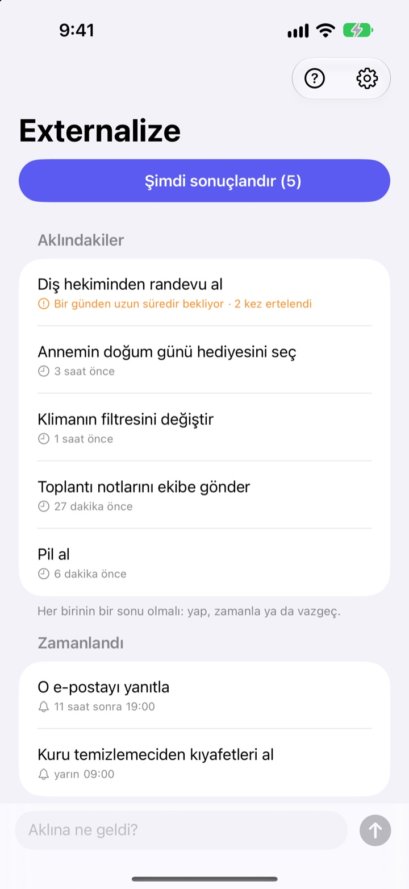
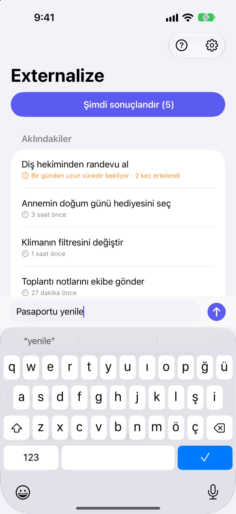
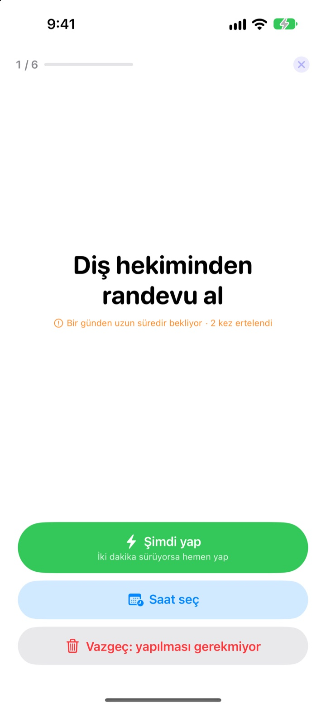
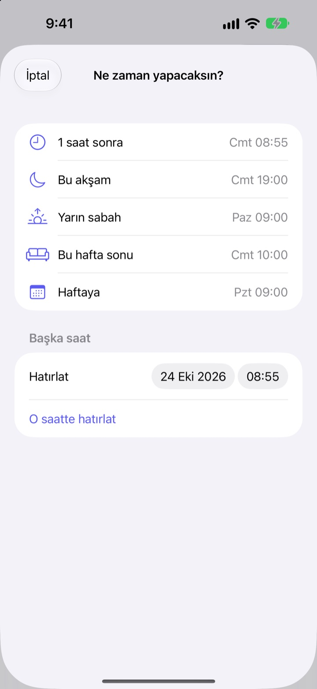

Şimdi not al.
Akşam sonuçlandır.
“Hah, şunu yapmam lazımdı…” Birkaç kelimeyle kafandan çıkar ve aklından at. Akşam kalanları tek tek sonuçlandır.
Tüm özellikler ücretsiz. Hesap ya da giriş yok.

Burada dene
Aklındaki bir şeyi yaz ya da bir örneğe dokun. Sonra “Şimdi sonuçlandır”a bas ve her birine bir son ver.
Küçük işler bile kafada yer kaplar
Duşta, kırmızı ışıkta, tam uykuya dalarken: “Şunu yapmam lazım.” Yazacak yer yok, aklında tutmaya çalışırsın, o sırada yaptığın iş de aksar. Yapılacaklar uygulamaları önce liste ve son tarih ister, not almak bile iş olur.
Üç saniye yaz, sonra unut
Uygulamayı aç, ekranın altındaki satıra yaz. Liste, klasör ya da son tarih seçmek yok.
Kilitli Ekran araç takımına dokununca boş bir satırla açılır. Siri’ye Externalize ile hatırla de ya da Eylem düğmesine ata, uygulamayı açmadan kaydedilsin.

Akşam, tek tek sonuçlandır
Kalan bir şey varsa saat 21.00’de bir kez hatırlatır. Her şey bittiyse rahatsız etmez.
Sonuçlandırmaya başlayınca işler büyük harflerle tek tek gelir. “Şimdi yap”, “Saat seç” ya da “Vazgeç”i seç, sıradaki gelsin. İki dakikalık bir işse zamanlayıcıyı başlat ve hemen bitir.

Hiçbir şey çürümeye bırakılmaz
“1 saat sonra”, “Bu akşam”, “Yarın sabah”, “Bu hafta sonu” ya da “Haftaya”yı seç, tam o zaman geri gelsin. Bildirimden doğrudan “Bitti”, “Yarın sabah” ya da “Vazgeç” diyebilirsin.
Bir günden fazla bekleyenler ve sürekli ertelediklerin işaretlenir, hep kaçan işler göze çarpar.

Üç adımda başla
- 1
Yaz
Uygulamada, Kilitli Ekran araç takımında ya da Siri ile, hangisi yakınsa birkaç kelime.
- 2
Bildirimlere izin ver
İlk kez bir şey yazdığında bir kez sorar. Akşam hatırlatması ve seçtiğin saatler için kullanılır.
- 3
Akşam sonuçlandır
Hatırlatmaya ya da “Şimdi sonuçlandır”a dokun, her birine bir son ver.
Doğrudan listeden
- Bir öğeye dokun
- “Bitti”, “Saat seç” ya da “Vazgeç”i seç
- Sağa kaydır
- Bitti (listeden çıkar)
- Sola kaydır
- Vazgeç ya da saat seçmek için “Zamanla”
- Şimdi sonuçlandır
- kalanları tek tek gözden geçir
- Externalize ile hatırla
- uygulamayı açmadan Siri’ye söyle
- Ayarlar ▸ Akşam hatırlatması
- saati değiştir ya da kapat
Saat seçerken “Bu akşam” 19.00, “Yarın sabah” 09.00, “Bu hafta sonu” cumartesi 10.00, “Haftaya” ise pazartesi 09.00 demektir. İstediğin tarih ve saati kendin de seçebilirsin.
Sık sorulan sorular
Uygulamayı açmadan not alabilir miyim?
Evet. Siri’ye Externalize ile hatırla de; ne yazacağını sorar ve kaydeder. Ayarlar’da “Not Al” kestirmesini Eylem düğmesine atarsan tek basış yeter.
Kilitli Ekran araç takımını nasıl eklerim?
Kilitli Ekran’a dokunup basılı tut, Özelleştir’e dokunup Kilitli Ekran’ı seç, araç takımı alanına dokun ve Externalize’ı ekle. Dokununca boş bir satır açılır ve kaç iş kaldığını gösterir. Ana Ekran için küçük bir araç takımı da var.
Akşam hatırlatmasını değiştirebilir ya da kapatabilir miyim?
Sağ üstteki dişli ▸ Akşam hatırlatması’ndan saati değiştirebilir ya da kapatabilirsin. Varsayılan 21.00’dir ve kalan bir şey olmayan günlerde çalmaz.
Bildirim gelmiyor.
Externalize ayarları bildirimlerin kapalı olduğunu söylüyorsa oradaki düğmeye dokunup iPhone Ayarları’ndan aç. Kalan bir şey olmayan günlerde akşam hatırlatması gelmemesi normaldir.
Zamanladığım iş nasıl geri gelir?
Seçtiğin saatte bildirim gelir. Basılı tutup hemen “Bitti”, “Yarın sabah” ya da “Vazgeç”i seçebilirsin. Hiçbir şey yapmazsan “Aklındakiler”e döner, bir sonraki seferde sonuçlandırırsın.
Bitti dediğim ya da vazgeçtiğim bir işi geri getirebilir miyim?
Hayır. Sonuçlanan işler listeden çıkar ve arşiv yoktur. Emin değilsen vazgeçmek yerine bir saat seç.
Yeni iPhone’a geçince notlarım taşınır mı?
Hayır. Her şey yalnızca bu aygıtta kalır, iCloud’a ya da bir sunucuya gönderilmez. Uygulamayı silersen notlar da silinir.
Hangi aygıtlarda çalışır?
iOS 17 veya sonrası yüklü iPhone’larda.
Sorun ya da hata mı var? mizzking75@gmail.com adresine yaz. iPhone modelini ve iOS sürümünü eklersen daha hızlı bakabiliriz.